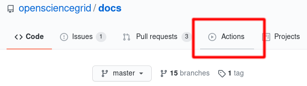
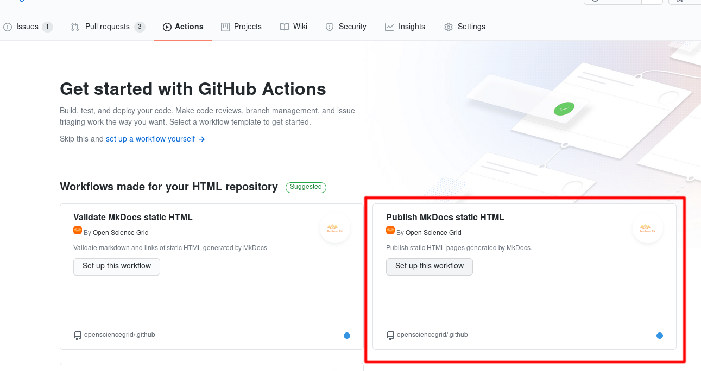
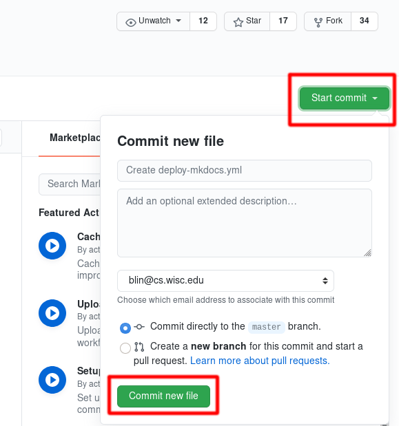
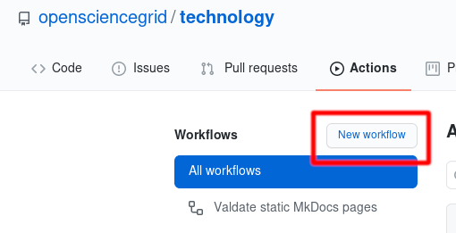

Publishing OSG Pages with MkDocs¶
The OSG uses MkDocs for site documentation and team-specific web pages (e.g. https://osg-htc.org/technology/). This document contains instructions for creating a new OSG area through GitHub and transitioning an existing MkDocs GitHub repository from Travis CI to GitHub Actions.
Creating New Pages¶
Need assistance?
If you need any assistance with setting up your GitHub repository, please reach out to help@osg-htc.org.
This document assumes that you are an administrator of the opensciencegrid GitHub organization.
Before starting, make sure that you have the git and gem tools installed.
-
Create a new public repository in the opensciencegrid organization (referred to as
<REPO NAME>in the rest of this document)- Check the box marked
Initialize this repository with a README
- Check the box marked
-
Identify the repository as using mkdocs:
- On the repository home page (i.e.,
https://github.com/opensciencegrid/<REPO NAME>), click the gear button in the top right (next to "About") - In the topics field, add
mkdocs - Click the “Save Changes” button
- On the repository home page (i.e.,
-
Clone the repository and
cdinto the directory:git clone https://github.com/opensciencegrid/<REPO NAME>.git cd <REPO NAME> -
Create a
gh-pagesbranch in the GitHub repository:git push origin main:gh-pages -
Update the contents of
README.mdand populate theLICENSEfile with a Creative Commons Attribution 4.0 license:wget https://creativecommons.org/licenses/by/4.0/legalcode.txt > LICENSE -
Create and encrypt the repository deploy key
-
Generate the repository deploy key:
ssh-keygen -t rsa -b 4096 -C "help@osg-htc.org" -f deploy-key -N '' -
Install the
travisgem:gem install travis -
Login using your GitHub credentials:
travis login --com -
Enable the repository in Travis:
travis enable --com -r opensciencegrid/<REPO NAME> -
Encrypt the deploy key and temporarily save the output (you will need the hashes later for
.travis.env):travis encrypt-file --com deploy-key -
Stage and commit your files:
git add LICENSE README.md deploy-key.enc git commit -m "Prepare the repository for Travis-CI deployment"Danger
Do NOT commit the unencrypted
deploy-key! -
Add the contents of
deploy-key.pubto your repository's list of deploy keys. Make sure to checkAllow write access.
-
-
Follow these instructions to add the
doc-ci-scriptssub-module
Use the mkdocs-v1 branch of the doc-ci-scripts submodule.
-
Create
mkdocs.ymlcontaining the following:site_name: <TITLE OF YOUR SITE> site_url: https://osg-htc.org/<REPO NAME> repo_name: https://github.com/osg-htc/<REPO NAME> theme: name: material nav: - Home: 'index.md' markdown_extensions: - admonition - codehilite: guess_lang: False - meta - toc: permalink: True -
Create a
docsdirectory containing anindex.mdthat will be your home page. -
Stage and commit these changes:
git add mkdocs.yml docs/index.md git commit -m "Staging initial web page contents" -
Push local changes to the GitHub repository:
git push origin mainYour documents should be shortly available at
https://www.opensciencegrid.org/<REPO NAME> -
Contact help@osg-htc.org to request repository backups to UW-Madison.
Creating an ITB Area¶
This section describes creating an ITB repository for a documentation area created in the previous section
-
Create a new repository in the opensciencegrid organization and name it
<REPO NAME>-itb. For example, an ITB area for thedocsrepository has a repository name ofdocs-itb. The ITB repository will be referred to as<ITB REPO NAME>in the rest of this document.- Check the box marked
Initialize this repository with a README - Once created, add the
mkdocstopic by clicking on the "Add topics" button
- Check the box marked
-
Clone the repository and
cdinto the directory:git clone git@github.com:opensciencegrid/<ITB REPO NAME> cd <ITB REPO NAME> -
Create a
gh-pagesbranch in the GitHub repository:git push origin main:gh-pages -
Update the contents of
README.md -
In the non-ITB repository, create and encrypt the ITB repository deploy key
-
cdinto the non-ITB repository and generate the ITB deploy keycd <REPO NAME> ssh-keygen -t rsa -b 4096 -C "help@osg-htc.org" -f deploy-itb -
Install the
travisgem:gem install travis -
Encrypt the deploy key:
travis encrypt-file deploy-itb -
Update
.travis.envwith the appropriate ITB values -
Add and commit your files:
git add .travis.env deploy-itb.enc git commit -m "Add ITB deployment"Danger
Do NOT commit the unencrypted
deploy-itb!
-
-
Add
deploy-itb.pubto the ITB repository's list of deploy keys. Make sure to checkAllow write access. -
Still in the non-ITB repository, push your local changes to the GitHub repository
git push origin mainYour documents should be shortly available at
https://www.opensciencegrid.org/<REPO NAME>
Transitioning to GitHub Actions¶
Need assistance?
If you need any assistance with transitioning your repository to GitHub actions, please reach out to help@osg-htc.org.
When originally developed, OSG MkDocs repositories were set up to automatically publish web page changes through Travis CI. But in November 2020, Travis CI changed their pricing model so we are moving the automatic publishing infrastructure to GitHub Actions and using this opportunity to also upgrade the version of MkDocs.
To ensure that your pages continue to be autmoatically published you will need to prepare your repository for the new version of MkDocs, disable Travis CI, and enable GitHub Actions.
Preparing the repository¶
Before upgrading, you must fix the following incompatibilities:
-
Rename the
pages:section ofmkdocs.ymltonav:. The section contents are identical; only the name is changing. -
Update all of the links in the documents as follows:
- Ensure links end in
.md - Ensure links are document-relative, not site-relative
For example, links should be of the form
../software/development-process.mdinstead of/software/development-process. - Ensure links end in
-
Push your changes to your fork and create a pull request
Previewing your pages with Docker
If you would like to ensure the correctness of your fixes, run the following command:
docker run -it -v ${PWD}/docs -p 8000:8000 squidfunk/mkdocs-material:6.1.4
After running this command, enter localhost:8000 in your browser to preview your pages.
Saved changes made to .md files are automatically updated in your browser!
Disabling Travis CI¶
After you've prepared your repository for the transition, disable Travis CI by removing related files from it. Perform the following actions from the command-line:
-
Create a fresh clone of the repository that is still using Travis CI:
git clone https://github.com/opensciencegrid/<GIT REPOSITORY>Important
For the rest of the steps in this documentation to work, you should create a new clone of the repository using the above command, even if you already have an existing copy!
-
cdinto the directory containing the repository (should be the same as<GIT REPOSITORY>by default) -
Remove all of the Travs CI related files:
git rm ci git rm .travis.env deploy-key.enc .travis.yml -
Commit your changes:
git commit -am "Disable Travis CI" -
Push your changes (you will be prompted for your GitHub credentials):
git push origin master
Enabling GitHub Actions¶
The new method for validating and publishing OSG pages for a MkDocs repository can be enabled entirely through the GitHub web interface:
-
Navigate to the
opensciencegridfork of the GitHub repository in your web browser, e.g. https://github.com/opensciencegrid/docs/ -
Click on the
Actionstab:
-
Find the
Publish MkDocs static HTMLworkflow by the Open Science Grid and click theSet up this workflowbutton:
-
Click on the
Start commitdrop-down button then clickCommit new file:
-
Navigate to the
Actionstab to verify your transition. If you see green check marks, your pages are now being published with GitHub Actions! -
(Optional) Enable the
Validate MkDocs Static HTMLworkflow to check for broken links and markdown correctness of pull requests to the repository.-
Navigate to the
Actionstab as before -
Click on the
New Workflowbutton:
-
Find the
Validate MkDocs static HTMLworkflow by the Open Science Grid and clickSet up this workflow -
As before, click on the
Start commitdrop-down button then clickCommit new file
-